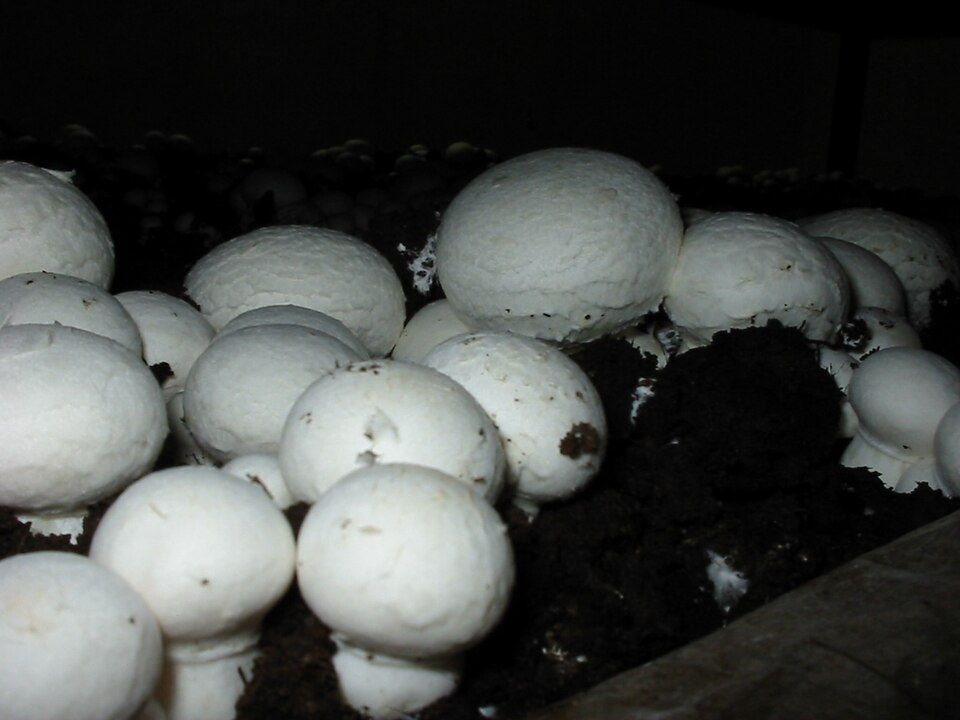
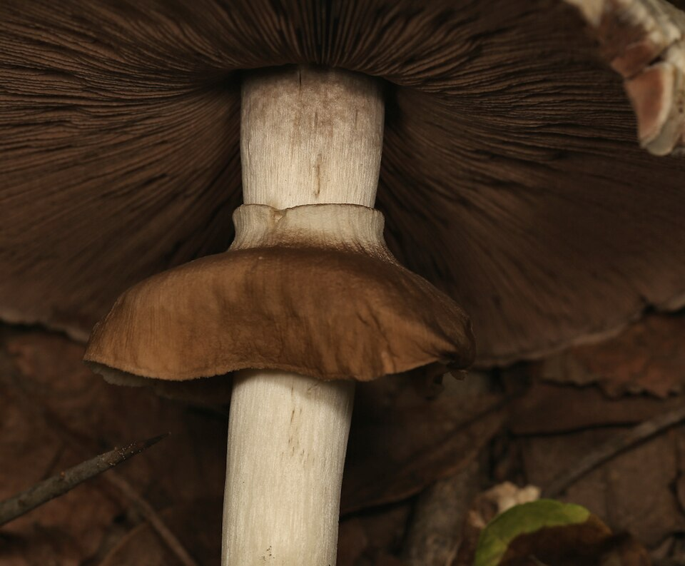
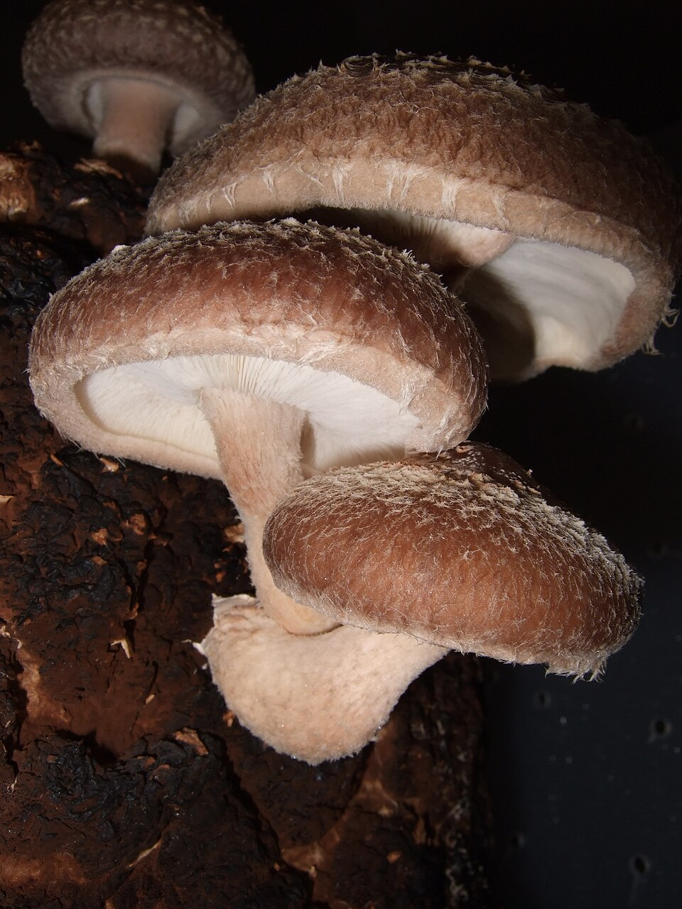
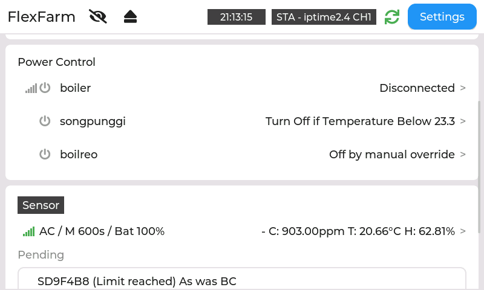
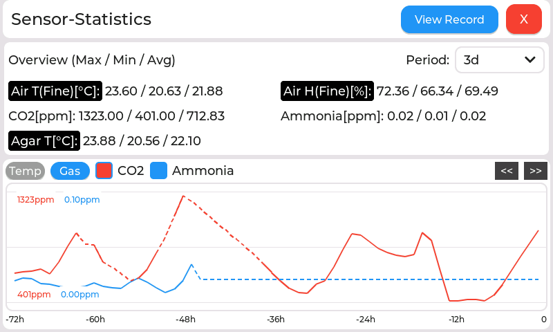

아이폰, 갤럭시 모두 휴대폰에서 바로 봅니다
앱을 설치하지 않고, 홈 화면에 추가해 앱처럼 씁니다.


설치 없는 웹앱
앱 설치 없이 홈 화면에서 바로 엽니다.
실시간 측정치와 그래프
바뀐 내용이 바로 화면에 들어옵니다.
사진과 설비 조작
현장 사진을 보고, 설비를 켜고 끕니다.
알림을 누르면 바로 열림
문제가 생기면 알림을 받고 바로 확인합니다.
언제 무슨 일이 생길지 모르니 재배사를 떠나기 어렵습니다.
무슨 일이 생겼는지 확인하려면 직접 재배사에 가야 합니다.
상황을 알아도 설비를 조작하려면 다시 현장으로 가야 합니다.
고온 고습을 견디지 못하는 장치 때문에, 비좁은 재배사 안의 전선과 급수 호스 사이에서 작업합니다.
| 지금까지 | SenseThru |
|---|---|
| 무슨 일이 생겼는지 가서 봐야 합니다 | 측정치와 사진을 언제 어디서나 봅니다 |
| 확인한 뒤에도 조작하러 가야 합니다 | 팬, 가습기, 건조기, 보일러를 원격으로 켜고 끕니다 |
| 24시간 재배사에 붙어 있어야 합니다 | 문제가 생기면 휴대폰으로 알려 줍니다 |
| 사람이 때맞춰 설비를 조작합니다 | 측정치와 타이머로 자동 제어합니다 |
| 장치를 꽂았다 뽑고 전선이 뒤엉킵니다 | 안쪽에는 무선 장치만 둡니다 |
선 없이 원하는 곳에 둡니다. 최대 3개월 이상 충전 없이 씁니다(계산값, 실측 전).
콘센트가 가까우면 꽂아 두고 충전 걱정 없이 씁니다.
충전이 필요 없는 교체형 전지를 씁니다.
컨트롤러가 모든 센서와 카메라의 잔량을 모아 보여 주고, 휴대폰에서도 봅니다.

양송이

신령버섯

표고
생육 환경의 기본입니다. 정밀 센서와 보급형 센서 가운데 골라 답니다.
환기를 판단합니다. 일부러 높여 생육 속도와 버섯 모양을 조절하고 수확 시기를 맞출 때도 씁니다.
초기 배지 상태를 확인합니다. 1차 발효가 잘못됐거나 2차 발효가 덜 된 배지에서는 높은 수치로 검출됩니다.
고온용 센서로 뜨겁고 습한 배지의 온도를 잽니다.
정한 간격으로 찍어 생육을 눈으로 확인합니다.
사진: Мыць Денис (Public domain); Wynand Uys (CC BY 4.0); frankenstoen (CC BY 2.0). 모두 Wikimedia Commons, 크기 조정. 실제 재배 사진으로 교체 예정.
전선 줄이기: 데이터 선 없이 무선으로 연결합니다.
고장 줄이기: 주요 장치를 습한 공간 밖에 둡니다.
경제적 장치: 고온용 장치를 함께 제공합니다.

주화면: 설비 상태, 현재 측정치, 신호, 배터리

그래프: 1시간에서 1주일까지, 측정이 빠진 구간은 점선으로 표시
앱 설치 없이 홈 화면에서 바로 엽니다.
바뀐 내용이 바로 화면에 들어옵니다.
현장 사진을 보고, 설비를 켜고 끕니다.
문제가 생기면 알림을 받고 바로 확인합니다.
버섯의 변화를 AI가 알아채, 수확과 병해, 환경 이상을 미리 알려 줍니다.
| 단계 | 제공 기능 | 시기 |
|---|---|---|
| 1단계 | 수확 시기 예측, 병해 발생 경고 | 2027년 2분기 |
| 2단계 | 온도, 습도, CO2, 양분의 부족과 과다 예측 | 2027년 4분기 |
시작 작물: 양송이로 학습 데이터를 축적하고 있습니다.
AI 기능은 개발 계획이며, 현재 제공되는 기능이 아닙니다.
원격으로 바로 켜고 끕니다. 정한 시간 뒤 자동으로 풀어 깜빡 잊어도 괜찮습니다.
켜기와 끄기를 반복하고, 낮과 밤을 나눠 설정합니다.
켜는 기준과 끄는 기준만 정하면 추세까지 보고 자동으로 판단합니다.
기준 센서, 추세, 최소 유지 시간까지 직접 정해 세밀하게 맞춥니다.
통신, 촬영, 저장 장치처럼 문제의 종류를 코드로 나눠 알려 줍니다. 무엇을 확인해야 할지 바로 알 수 있어 헛걸음을 줄입니다.
| 측정 | 공기 온도·습도(정밀·보급형), CO2, 암모니아, 배지 접촉 온도, 사진 |
|---|---|
| 연결 대수 | 고온용 센서 2대(대당 기후 1, 배지 2), 카메라 2, 정밀 공기 1, 간이 공기 1, 이산화탄소 1, 암모니아 1 |
| 측정 주기 | 1분, 10분, 30분, 1시간 중 선택. 응답 주기는 따로 선택(짧을수록 빠르고, 길수록 배터리가 오래갑니다). 조작하는 동안에는 바로 반응합니다. |
| 전력 제어 | 10A(2kW) 제어 2회로, 원격 보일러 제어 1회로. 강제, 타이머, 센서 AI, 센서 수동 |
| 화면 | 4.3인치 터치 화면, 아이폰·갤럭시·PC 웹앱(앱 설치 없음), 한국어·영어 |
| 알림 | 휴대폰 푸시 알림, 기록 최근 500건 |
| 기록 | 내부 저장소와 SD 카드, 그래프 1시간~1주, 웹 백업·복원 |
| 전원 | 충전 배터리와 USB 충전기 두 가지 전원으로 동작합니다. 고온용 센서는 충전이 필요 없는 교체형 전지를 씁니다. 장치와 설정에 따라 충전이나 교체 없이 최대 3개월 이상 사용할 수 있습니다(계산값, 실측 전). |
원격으로 보고 조작하려면 재배사 밖에 Wi-Fi와 인터넷이 있어야 합니다. 인터넷이 끊겨도 현장 화면은 쓸 수 있습니다.
내부안테나가 재배사 벽을 지나는 통로를 확인합니다.
제어할 팬, 가습기, 건조기, 보일러의 전력과 위치를 확인합니다. 원격 보일러 제어는 보일러 기종에 따라 지원 여부를 확인합니다.
환경 관리용 제품입니다. 안전 경보 장비를 대체하지 않습니다.
FlexFarm · 연락처 추후 기재